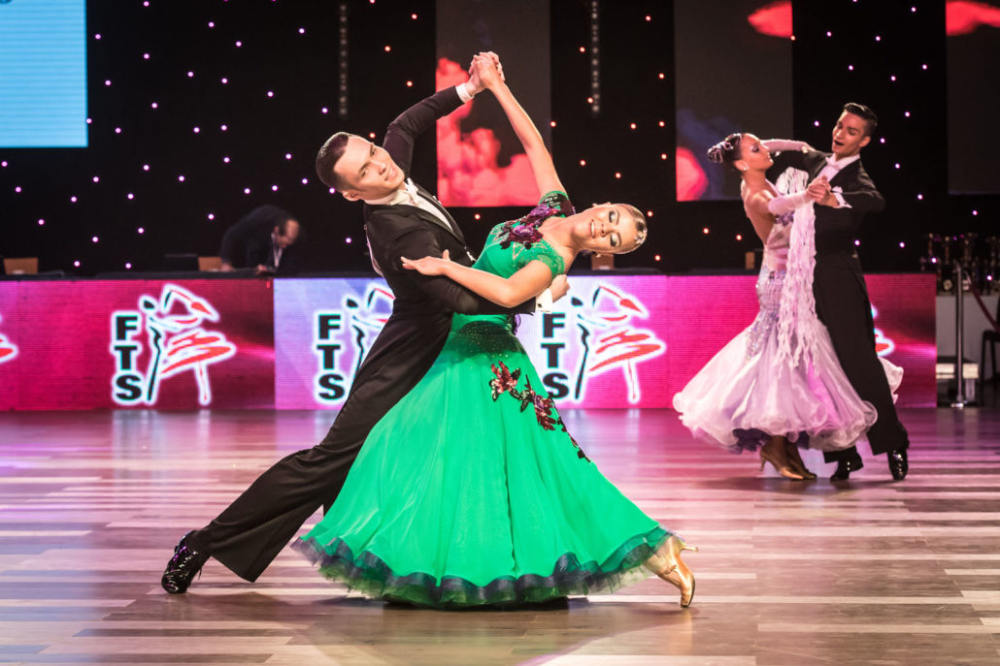
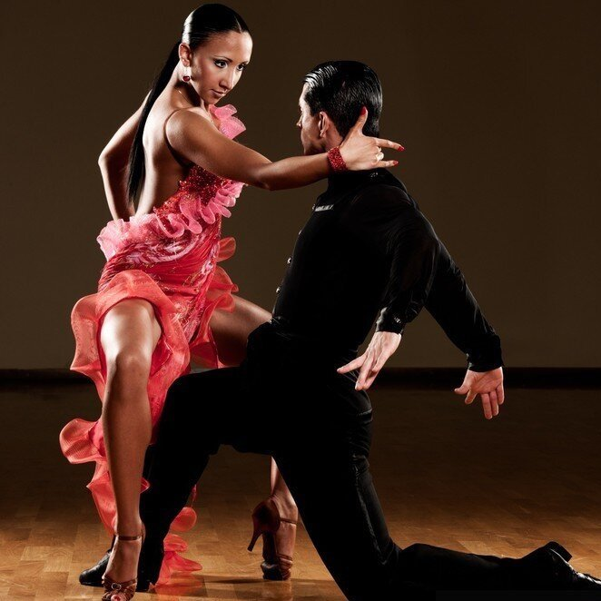

Ballroom dance is a broad term encompassing various partnered dance styles performed in a ballroom setting, typically involving couples. These dances are characterized by their formal elegance, flowing movements, and emphasis on partnership and technique. Some popular ballroom dances include the waltz, foxtrot, tango, quickstep, and Viennese waltz, as well as Latin styles like cha-cha-cha, samba, and rumba.
Standard
International Standard ballroom dancing, also known simply as Standard, is a style featuring five dances: Slow Waltz, Tango, Viennese Waltz, Slow Foxtrot, and Quickstep. These dances are characterized by a consistent, closed dance hold, emphasizing elegant posture and a smooth, flowing movement across the dance floor.
Slow Waltz
A slow, elegant dance with a three-count rhythm, known for its smooth, flowing movements.
Tango
A passionate and dramatic dance with strong, accented steps and a focus on character and storytelling.
Viennese Waltz
A faster waltz with a more lively and energetic style, featuring quick turns and rotations.
Slow Foxtrot
A graceful and conversational dance with a four-count rhythm, characterized by flowing movements and graceful steps.
Quickstep
A fast-paced dance with a four-count rhythm, incorporating a variety of steps and turns, and a lively and energetic feel.
Latin
Latin ballroom dancing is the other of the two main categories in the International Style. These dances are characterized by their lively rhythms, fast footwork, and often sensual movements. These include the cha-cha, samba, rumba, paso doble, and jive
Cha-Cha
A fast-paced dance with a basic pattern of three steps followed by a quick "cha-cha" shuffle, often incorporating hip and pelvic movements.
Samba
A lively and energetic dance with a flowing, swaying motion, often involving a specific "samba walk".
Rumba
A romantic and sensual dance with a slow, flowing rhythm and a focus on hip movements and dips.
Paso Doble
A dramatic and theatrical dance inspired by the Spanish bullfight, featuring a lot of sharp, forceful movements and stylized poses.
Jive
A fast and energetic dance with a quick, percussive rhythm, often including kicks, flicks, and dynamic movements.